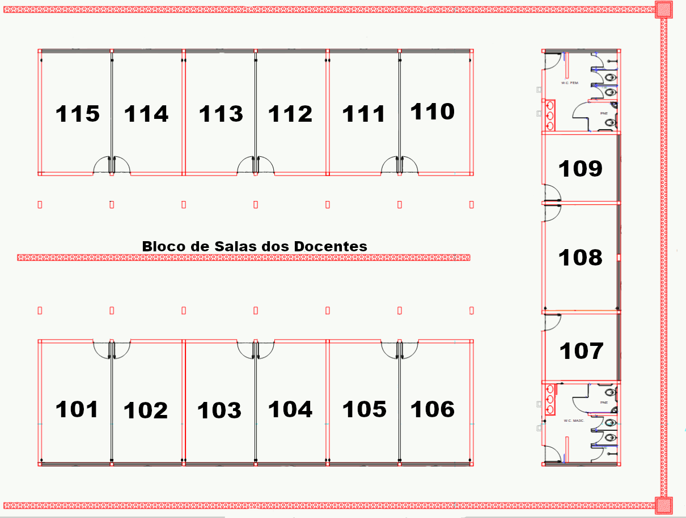

Prof. Dr. Filipe Camargo Dalmatti Alves Lima
Cargo: Professor Efetivo
E-mail: fdlima@ifsp.edu.br
Área de Atuação: Cálculos de estrutura eletrônica em materiais; Ensino de Física
Formação Acadêmica
- Doutorado em Física dos Materiais e Mecânica – USP (2015)
- Mestrado em Física – USP (2010)
- Graduação em Física – UNESP (2007)
Linhas de Pesquisa
- Estudo computacional de mecanismos de transferência de carga em sistemas com aplicações em nanobiotecnologia.
- Estudo de sistemas com aplicações na industria do petróleo.
- Mecanismos de agregação de sistemas com aplicação em energia e petróleo.
- Estudos de transferência de carga de sistemas com interesse biológico.
- Estudo espectroscópico de moléculas com potencial farmaceutico.
Produção Acadêmica
- Autor de 36 artigos publicados em periódicos internacionais
- Coautor de 1 livro na área de Avanços em Bioeletroquímica
- Participação em congressos nacionais e internacionais
Orientações
- 1 orientação de Mestrado concluídas
- 1 orientação de Doutorado Concluida
- Várias orientações Iniciação Científica e/ou TCC
Projetos e Extensão
Localização da Sala
Sala 101 – Bloco de Docentes